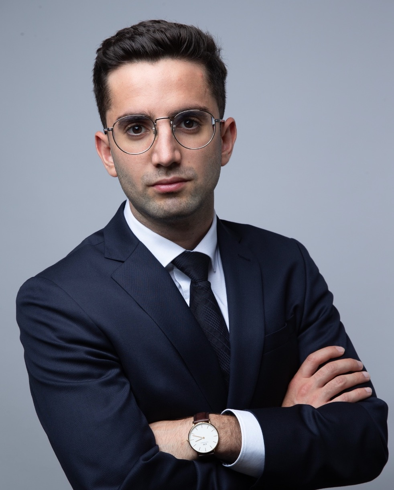

Indivduelle Rechtsberatung im Strafrecht, Wirtschaftsstrafrecht und Wirtschaftsrecht.
Wir sind eine wirtschaftsnahe Rechtsanwaltskanzlei im Herzen Münchens mit Schwerpunkt im Strafrecht, Wirtschaftsstrafrecht und Wirtschaftsrecht. Mit einem Netzwerk erfahrener Rechtsanwälte beraten und vertreten wir Mandanten bundesweit mit hohem fachlichem Anspruch und konsequentem Einsatz.
Darüber hinaus sind wir breit aufgestellt und bearbeiten auch Mandate aus dem Zivilrecht, insbesondere die Durchsetzung von Forderungen, das Insolvenzrecht, Mietrecht, Arbeitsrecht, Familienrecht sowie Erbrecht. So können wir Mandanten auch bei komplexen, fachübergreifenden Fragestellungen umfassend und lösungsorientiert begleiten.
Unsere internationale Ausrichtung ermöglicht eine verlässliche Beratung in deutscher, englischer, russischer, mazedonischer und bulgarischer Sprache. Jedes Mandat bearbeiten wir mit maximaler Sorgfalt und vollem Einsatz, um die Interessen unserer Mandanten nachdrücklich und zielgerichtet durchzusetzen.
Wir verteidigen Mandanten im Strafrecht mit voller Durchsetzungskraft – vom Ermittlungsverfahren bis zur Hauptverhandlung. Unsere Tätigkeit umfasst unter anderem Körperverletzung, Betrug, Diebstahl, Raub, Bedrohung, Nötigung, Sexualstraftaten, Drogendelikte (BtMG), Verkehrsstrafsachen, Hausdurchsuchungen sowie Haftfragen. In jeder Phase setzen wir uns konsequent für Ihre Rechte ein und entwickeln eine klare, belastbare Verteidigungsstrategie.
Im Wirtschaftsstrafrecht ist eine akribische Analyse der Akten und wirtschaftlichen Hintergründe entscheidend. Wir vertreten Mandanten insbesondere bei Betrug, Untreue, Steuerhinterziehung, Geldwäsche, Korruption, Insolvenzstraftaten, Subventionsbetrug sowie in komplexen Ermittlungsverfahren gegen Geschäftsführer und Führungskräfte. Unsere Anwälte denken wie Unternehmer und bringen Erfahrung aus führenden Wirtschaftskanzleien mit, um strafrechtliche Risiken wirtschaftlich sinnvoll zu steuern.
Im Wirtschaftsrecht beraten und vertreten wir Unternehmen, Gesellschafter und Gründer mit einem klaren Verständnis für unternehmerische Abläufe. Unsere Schwerpunkte liegen im Gesellschaftsrecht, Insolvenzrecht, bei der Gründung von Unternehmen, Umstrukturierungen sowie der laufenden rechtlichen Begleitung von Unternehmen. Wir verbinden juristische Präzision mit wirtschaftlichem Denken und entwickeln praxisnahe, belastbare Lösungen.

Rechtsanwalt Daniil Shalumov ist als Rechtsanwalt in München tätig und berät nationale wie internationale Mandanten in den Bereichen Strafrecht und Wirtschaftsstrafrecht, Handels- und Gesellschaftsrecht sowie Insolvenzrecht. Die Beratung erfolgt auf Deutsch, Englisch und Russisch und richtet sich sowohl an Unternehmer, Führungskräfte als auch an Privatpersonen mit komplexen rechtlichen Fragestellungen.
Seine juristische Ausbildung und praktische Erfahrung sammelte Rechtsanwalt Shalumov unter anderem in einer international tätigen Großkanzlei sowie im Ausland. Diese Stationen haben seinen Blick für wirtschaftliche Zusammenhänge, internationale Sachverhalte und strategische Prozessführung nachhaltig geprägt.
Als ehemaliger Leistungssportler steht Rechtsanwalt Shalumov für ein hohes Maß an Disziplin, Belastbarkeit und Zielorientierung. Was im Sport Voraussetzung für Erfolg ist, gilt für ihn ebenso im Mandat: maximales Engagement, strategischer Weitblick und absolute Fokussierung auf das bestmögliche Ergebnis.
Im Straf- und Wirtschaftsstrafrecht entwickelt er präzise, realistisch kalkulierte Verteidigungsstrategien, die sowohl rechtlich fundiert als auch taktisch durchdacht sind. Seine Mandanten profitieren von einer klaren, ehrlichen Beratung, konsequenter Interessenvertretung und einem kämpferischen Einsatz, der stets von juristischer Präzision getragen ist.
Rechtsanwalt Berov ist Partner der Rechtsanwaltskanzlei Shalumov & Partner. Er berät Mandanten schwerpunktmäßig im Ausländer-, Arbeits- und Familienrecht. Als in München zugelassener Rechtsanwalt absolvierte er seine juristische Ausbildung in München, Peking und Brüssel.
Aufgrund seiner langjährigen beruflichen Tätigkeit in internationalen Großkanzleien sowie bei Behörden, Gerichten und Handelskammern verfügt Rechtsanwalt Berov über ein hohes Maß an fachlicher Kompetenz, strategischem Denkvermögen und einen souveränen Umgang auch mit komplexen rechtlichen Fragestellungen.
Ein besonderes Anliegen seiner Tätigkeit ist die engagierte rechtliche Begleitung bulgarischer und mazedonischer Mandanten in Deutschland, denen er mit fachlicher Expertise, kulturellem Verständnis und persönlichem Einsatz zur Seite steht – insbesondere in rechtlich und menschlich anspruchsvollen Fällen mit grenzüberschreitendem Bezug.
Er berät in Bulgarisch, Mazedonisch, Deutsch und Englisch.
+49 (0) 179 1400786
kanzlei@shalumov-partner.de
shalumov-partner.de
Görresstraße 24
80798 München
Deutschland
Shalumov und Partner Rechtsanwälte GbR
Görresstraße 24
80798 München
Deutschland
Vertretungsberechtigt:
Rechtsanwalt Daniil Shalumov (alleinvertretungsberechtigt)
Kontakt:
Telefon: +49 179 1400786
E-Mail: Kanzlei@shalumov-partner.de
Die Berufsbezeichnung Rechtsanwalt wurde in der Bundesrepublik Deutschland verliehen.
Zuständige Rechtsanwaltskammer:
Rechtsanwaltskammer Karlsruhe
Reinhold-Frank-Straße 72
76133 Karlsruhe
Ein Wechselantrag zur Rechtsanwaltskammer München ist bereits gestellt.
Es gelten insbesondere folgende berufsrechtliche Vorschriften:
Die berufsrechtlichen Regelungen sind abrufbar unter:
https://www.brak.de/fuer-anwaelte/berufsrecht/
Berufshaftpflichtversicherung
Markel Insurance SE – Niederlassung für Deutschland
Sophienstraße 26
80333 München
Versicherungsschutz besteht mindestens für Tätigkeiten im Rahmen der gesetzlichen Anforderungen gemäß § 51 BRAO.
Umsatzsteuer-ID
Umsatzsteuer-Identifikationsnummer gemäß § 27a UStG:
(wird ergänzt sobald sie vorliegt)
Als Diensteanbieter sind wir gemäß § 7 Abs. 1 Digitale-Dienste-Gesetz (DDG) für eigene Inhalte auf diesen Seiten nach den allgemeinen Gesetzen verantwortlich. Nach §§ 8 bis 10 DDG sind wir jedoch nicht verpflichtet, übermittelte oder gespeicherte fremde Informationen zu überwachen oder nach Umständen zu forschen, die auf eine rechtswidrige Tätigkeit hinweisen. Verpflichtungen zur Entfernung oder Sperrung der Nutzung von Informationen nach den allgemeinen Gesetzen bleiben hiervon unberührt.
Die durch die Seitenbetreiber erstellten Inhalte und Werke auf diesen Seiten unterliegen dem deutschen Urheberrecht. Beiträge Dritter sind als solche gekennzeichnet. Die Vervielfältigung, Bearbeitung oder Verbreitung außerhalb der Grenzen des Urheberrechts bedarf der schriftlichen Zustimmung.